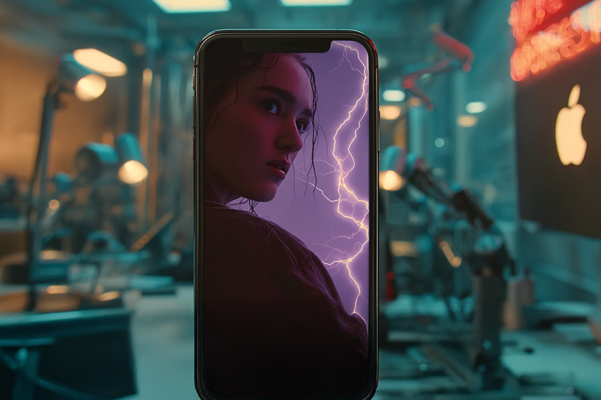
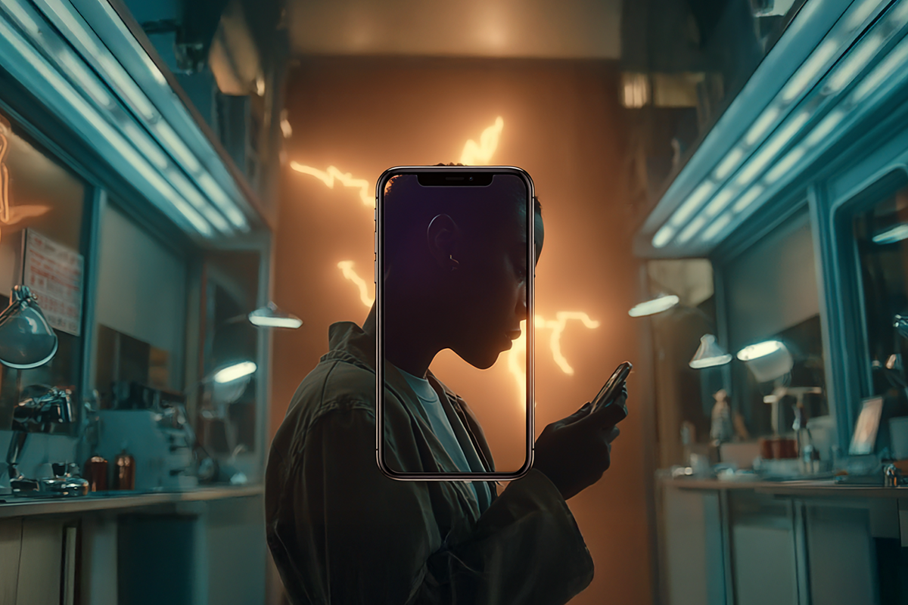
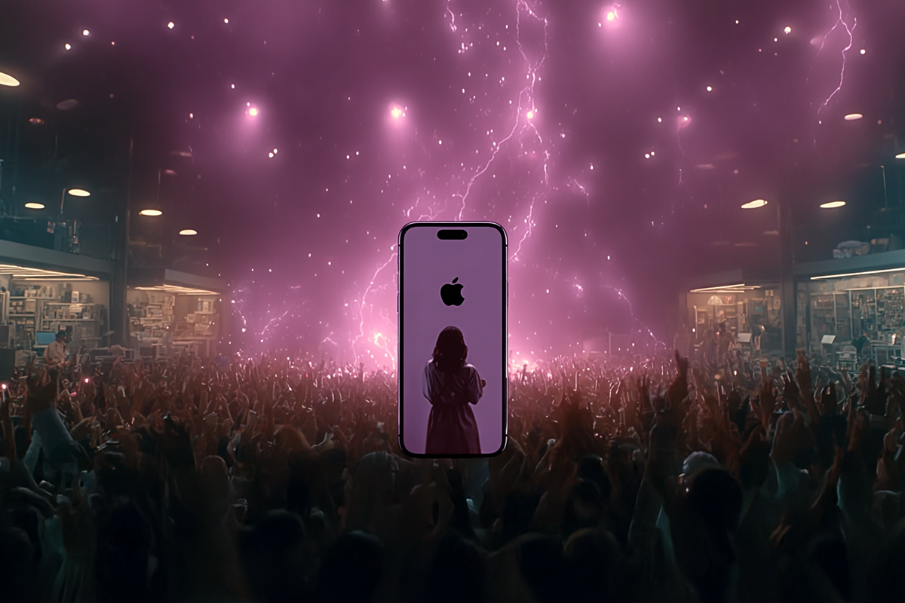

Nueva generación Iphone: IA + salud
Las actualizaciones para mejorar tu bienestar personal.
Las actualizaciones para mejorar tu bienestar personal.

Como cada septiembre, los fanáticos de Apple se alistan para los nuevos lanzamientos. El día llegó el pasado martes 9 de septiembre en el icónico Apple Park, en Cupertino, California, donde se encuentran las oficinas principales de la empresa. Allí, se anunció la nueva generación de Iphone con un foco diferente a otros años: el bienestar de sus usuarios, y por consecuencia, su salud.
Esto, acompañado de novedades en otros productos. Los nuevos AirPods Pro 3, que ofrecen traducción de idiomas en tiempo real y medición de frecuencia cardíaca del usuario. También, los nuevos Apple Watch: el Series 11, el SE 3 y el Ultra 3. Todos ellos incluyen funciones avanzadas de salud, como medición de presión arterial alta y detección de temperatura.
También, vienen con Apple Intelligence, la capa de IA que Apple está integrando en iOS 26, watchOS 26, macOS 26, etc. Esto permite hacer muchas cosas más “inteligentes”, como tener subtítulos de algo en vivo o identificar acciones automáticas en emails.

Parece ser que la salud se tomó la agenda del Keynote, porque la sección arrancó con videos de usuarios que relataron cómo sus dispositivos Apple les alertaron de problemas físicos o los ayudaron en situaciones de emergencia. Así, se dio paso a una serie de anuncios de nuevas funciones relacionadas con el cuidado del cuerpo.
El Apple Watch Series 11 se pondrá al día con sus competidores al sumar un medidor de sueño, compitiendo directamente con Oura Ring, Google, Garmin y Samsung. Lo mismo con la función de detección de temperatura, que más allá de obviamente ayudar a saber si una persona tiene fiebre, puede sumar en temas de fertilidad, al poder predecir la ovulación, tomando como referencia la temperatura corporal.

Una de las novedades que más ha hecho ruido del nuevo Iphone 17 es que se podrá grabar con la cámara normal y la frontal al mismo tiempo. Es decir, mostrar como si estuvieras en una videollamada, pero ambas cámaras pertenecen a tu teléfono. Una función muy orientada a los creadores de contenido, porque te permite grabar cosas que pasan y a la vez grabar tu reacción.
Es ahí donde Apple hizo una jugada muy exitosa. Contrataron a nada más ni nada menos que a Dua Lipa, que se encuentra promocionando su último tour, para la campaña “Shot On Iphone”. Ahí, la cantante mostró el detrás de escena de su nueva gira “Radical Optimism”, en un video donde recorre un día desde donde se prepara hasta el concierto mismo grabado en dos cámaras.

Toda la discusión, al menos en la prensa de Estados Unidos, se centró en si subirían los precios o no, debido a los aranceles que fijó el presidente Donald Trump. La respuesta es no: los precios se mantuvieron relativamente estables, a pesar de que Apple ha dicho que espera un impacto de USD $1.100 millones por los aranceles solo en este trimestre. Como referencia, el Iphone 17 arrancará en USD $799 y el 17 Pro en USD $1.099, nada del otro mundo si se compara con los modelos anteriores.
Si bien en LinkedIn se vieron críticas de cómo Apple ha cambiado el estilo de sus Keynote y ya no respiran la simpleza de lo que hacía Steve Jobs, quedó bastante claro que aún hay espacio para sorprender en un mercado casi saturado. Con el nuevo Iphone, las funciones de salud y la promesa de Apple Intelligence, ya no es solo vender hardware, es moldear la forma en la que vivimos, trabajamos y nos conectamos.
 Tecnología
TecnologíaSi eres como yo y revisas TikTok e Instagram constantemente, te habrás dado cuenta de que estas redes son casi como un experimento social.
 Tecnología
TecnologíaHablamos mucho de inteligencia artificial. La tenemos integrada en nuestra vida, nos ayuda en nuestros trabajos y le preguntamos cosas de…
 Tecnología
TecnologíaDurante años hemos pensado en la inteligencia artificial como algo súper frío: servidores gigantes, computadores procesando datos y…